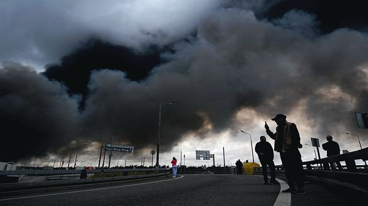
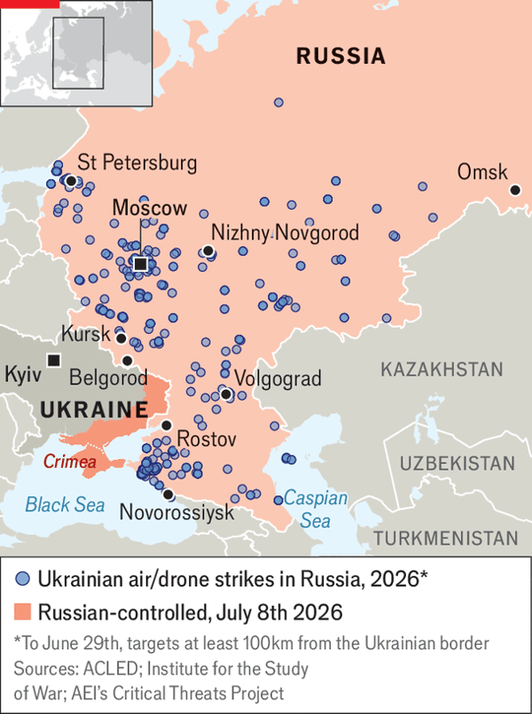

Jul 09, 2026 05:22 AM | MOSCOW AND ROSTOV

IN MIDSUMMER the Moscow railway stations that serve southbound routes are usually bustling with holiday-makers. For the past four years stressed parents and children gazing towards the distant promise of the sea have mingled with men in uniforms. This summer the stations feel entirely different. Trains heading towards Crimea are spookily empty, the khaki is more prominent and there is a pervading sense of anxiety. As is the case everywhere in Russia, the talk is of petrol shortages, drone strikes, internet outages and the threat of a new round of mobilisation.
Not since reservists were first mobilised to fight in Ukraine in 2022 have Russians felt so unnerved. On July 2nd the Public Opinion Foundation (FOM), a pollster close to the Kremlin, reported that 55% said their colleagues and relatives felt anxious, up from 40% last year. Russia’s social contract, whereby citizens stayed out of politics and the authorities left them alone, has been broken. The war has come home and is everyone’s problem. Drone attacks, once confined to the border cities of Kursk and Belgorod, now threaten much of the country. On July 6th Ukrainian drones struck Russia’s largest refinery in Omsk, some 2,500km from the front line.
Petrol is being rationed across the country. Drivers wait two or three hours to buy the maximum daily allowance of 20 or 30 litres. Some filling stations have run dry. In Crimea and Novorossiysk, a city on the Black Sea, authorities have banned retail petrol sales; only officials, public services and businessmen connected to fuel operators may fill up. Two oil facilities near Novorossiysk have been destroyed. Valery, who owns a grocery shop in the city, expects fuel shortages to have a knock-on effect on food deliveries and other logistics. Food prices have already been affected: in June the cost of potatoes rose by 4.5% from a month earlier. Some farmers say they will not be able to harvest their crops if fuel shortages continue.
In the Rostov region, in southern Russia, the owner of several stalls that sell local produce says she dreams of having her own fuel tanker. “They can all go to hell with their ideas and grand ambitions,” she says. “They” include Vladimir Putin, Donald Trump, Volodymyr Zelensky, Emmanuel Macron and local governors. “We used to live just fine. Now all you do is scramble from one problem to the next.”

Elena Panfilova, who conducts focus groups in Moscow, says the mood is turning from frustration to seething hatred of the authorities. It is not just the fuel shortages and internet outages that make people angry, but the widening gap between reality and the Kremlin’s rhetoric. “The only way out is to stop [hostilities],” says Valery. “We have been hearing upbeat reports that ‘Russian troops are confidently advancing along the entire front line’ for all four years. Yet if you look at the maps, everything is bogged down in a swamp.”
Mr Putin continues to insist that the war is mostly going to plan. In a recent interview, reading his answers from an autocue, he said: “Everything is operating steadily and with a substantial margin of resilience.” His bare acknowledgment of the change in circumstances suggests he may still be deciding on his next course of action. Many Russians fear that instead of cutting his losses and scaling back, he will double down on the conflict.
Talk of mobilisation has intensified. In early June Sergei Gurulev, a deputy in parliament, wrote on social media that a decision to mobilise in autumn had already been made. Later he deleted his post, claiming it had been hacked. “It always happens like this: first there are rumours that something bad will happen, then the authorities start denying it, and then it happens,” says another Sergei, who works for an advertising firm in Nizhny Novgorod, east of Moscow. He is thinking of moving to the countryside, where it would be harder for recruiters to find him: “Going to the office will become suicide.” Many of his colleagues are considering fleeing the country. Discussion of emigration is at its most persistent since 2022.
Tests for another round of mobilisation may be under way in the Penza region, south-east of Moscow. Since mid-June locals have been reporting that men are being grabbed in public and in door-to-door sweeps, taken to assembly points and forced to sign contracts with the army. Noticeably fewer men are now on the streets. “The atmosphere in the city is terrible,” says Elena, a resident. “I forbade my husband from leaving the house. When I go out, I lock him from the outside. We keep the curtains drawn all day.” Andrey Surkov, Penza’s military commissar, claimed the raids were simply to hunt for draft dodgers and deserters.
Dissent is becoming more open. On June 25th a former soldier posted an appeal to Mr Putin on Instagram, saying soldiers were being tortured for refusing to hand over their earnings to commanders or to carry out suicidal missions, with many “zeroed out” (killed). “Vladimir Vladimirovich, pay attention to this. Invite me to meet you. Otherwise the army will turn its weapons on the Kremlin.” The man was predictably arrested (and later released), but by then the video had gained 20m views. From soldiers to street merchants, discontent is rising. As Sergei in Nizhny Novgorod says, “Nobody understands what all this is for, other than perhaps to satisfy Putin’s ego. If people protest, they go to jail. All we can hope for now is that he dies.” ■
To stay on top of the biggest European stories, sign up to Café Europa, our weekly subscriber-only newsletter.